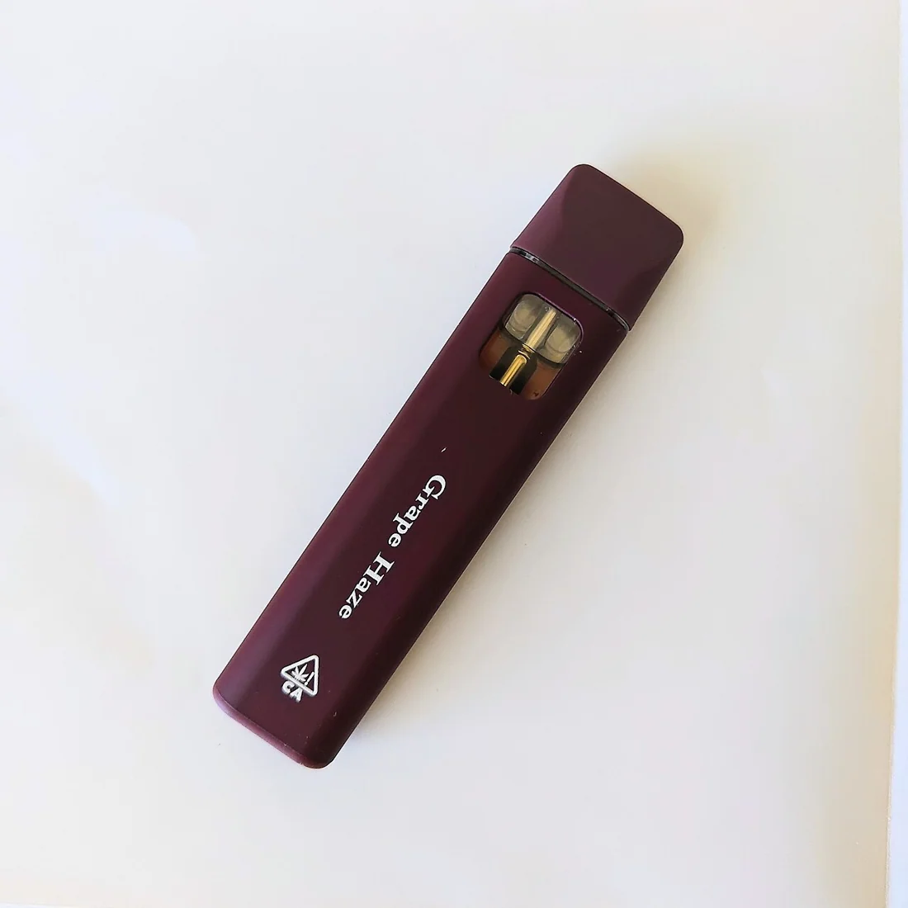

Aroma, labels & products / Local guide
Vape Hardware Safety: Batteries, Counterfeits, Legal Carts Only
Legal carts and working batteries beat mystery hardware. Counterfeits and abused cells turn a discreet format into a hazard.

Vape carts dominate discreet South Bay routines: no lingering flower smell in a condo hallway, easier dosing than a poorly rolled joint, fast onset compared with edibles. Hardware safety is the unglamorous half of that story, batteries, chargers, counterfeit packaging, and the stubborn fact that only licensed retail guarantees California’s testing pathway.
Buy cartridges and disposables from city-registered, state-licensed retailers. Counterfeit carts sold through informal channels have a long history of questionable oils, pesticides, and vitamin E acetate scandals that public-health agencies documented during prior lung-injury outbreaks. A familiar logo printed on a blister pack is not authentication. Matching packaging to a licensed shop receipt is.
Battery basics sound like phone care because they are. Use the charger that matches the device. Do not charge unattended on a couch cushion overnight. Replace swollen, dented, or overheating batteries. Keep terminals clean and dry. Pocketing a loose battery with keys and coins is how people invent short circuits. Dispose of damaged lithium cells through proper battery recycling streams, not hallway trash that can spark in a truck.
Hardware quality tells include secure 510 threads, intact mouthpieces, oil that does not look crystallized into mystery sludge after heat abuse, and devices that do not scream black-market comic-book branding. Ask budtenders which batteries the store stocks for the carts they sell. Keep firmware-free simple pens if you do not want gadget complexity. On wildfire-smoke days, remember that vaping still loads lungs; edibles remain the clearer lung-conscious alternative.
Legal does not mean risk-free. High-potency distillate carts can overshoot your intended dose in a few pulls. Start with shorter draws. Do not drive impaired. Keep devices away from teens who may confuse them with nicotine disposables. San Jose’s regulated shelves exist partly so adults can avoid the worst hardware lottery. Use that advantage; leave the mystery blister packs in the past. In San Jose’s limited storefront market, preparation beats impulse: verify the shop on SJPD’s registered cannabis businesses list, bring ID, read the package yourself after any recommendation, and keep consumption on private property with permission. Adult-use sales require customers 21 and older. Tax totals at checkout still apply. None of those retail realities replace clinician advice when health questions are personal. Quiet morning visits can leave more time for label reading than Saturday afternoon rushes after neighborhood events. Keep a simple personal log of milligrams, format, and how you felt the next day; pattern recognition beats lore. Share products only with other adults who consented, and store anything that looks like candy or soda away from kids and pets. If a sale tempts you to stock up, remember that discounts change cost, not onset time, impairment risk, or your calendar. South Bay adults who already shop licensed rooms know the pattern: lawful address, clear label, private use, rideshare when needed.